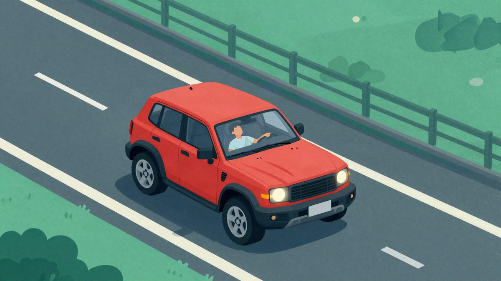

Vozač u Qingdaou na autocesti legao spavati uz pomoć sustava za vožnju, u autu mu je bila obitelj

Prometna policija u Qingdaou kaznila je vozača koji je na autocesti spustio sjedalo i zaspao dok je vozilom upravljao sustav pomoći pri vožnji. U autu su bila još tri člana obitelji, a na suvozačevu mjestu dijete mlađe od 12 godina, što je prema kineskim propisima dodatni prekršaj. Iznos kazne nije poznat.
Prometna policija u Qingdaou, u kineskoj pokrajini Shandong, kaznila je 7. studenoga 2026. vozača koji je na autocesti ležao i spavao dok je automobilom upravljao sustav pomoći pri vožnji. Slučaj je danas objavila Uprava za upravljanje prometom kineskog Ministarstva javne sigurnosti.
Građani su policiji dojavili da u crvenom SUV-u na autocesti vozač leži i spava. Policija je posumnjala da vozilo ne vozi čovjek, nego sustav pomoći pri vožnji.
Istraga je pokazala da je vozač putovao s obitelji, pa su u autu bila četiri člana. Policija navodi da je vozač procijenio da je promet miran i bez velike gužve. Kad je uključio sustav, spustio je sjedalo i zatvorio oči, uvjeren da time ne ugrožava sigurnost vožnje.
Dijete na suvozačevu mjestu
Pri pregledu vozila policija je utvrdila da je putnik na suvozačevu sjedalu mlađi od 12 godina.
Vozač nije prvi put tako postupio. Policija kaže da je i ranije više puta nakon uključivanja sustava igrao na mobitelu ili odmarao zatvorenih očiju, što je ocijenila kao ponovljeno opasno ponašanje.
Vozač je dobio ozbiljnu opomenu zbog slijepog oslanjanja na sustav i kaznu za više prekršaja. Koliko iznosi kazna, nije poznato.
Sustavi nisu autonomna vožnja
Policija ponavlja da sustav pomoći pri vožnji ne znači da vozač smije maknuti ruke s upravljača ili oči s ceste. Ne daje ni pravo na vožnju pod utjecajem alkohola, umoran ili rastresen.
ITHome dodaje da su takozvane "pametne vožnje" na tržištu i dalje samo pomoć vozaču, a ne potpuno autonomna vožnja ni sustav bez vozača. Vozač cijelo vrijeme mora biti na vozačkom mjestu, pratiti cestu i stanje vozila te imati vozilo pod kontrolom.
Izvor: ITHome (IT之家)